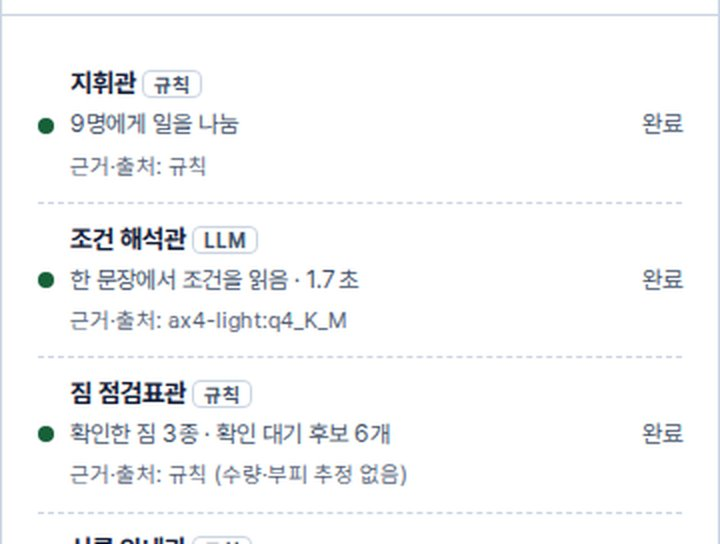
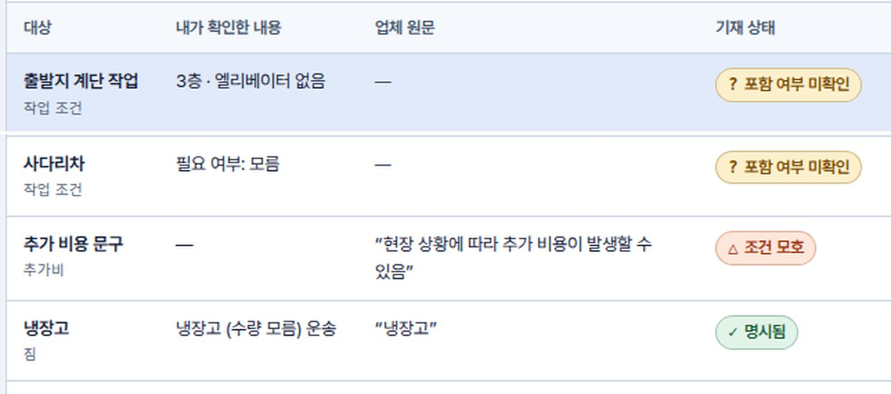
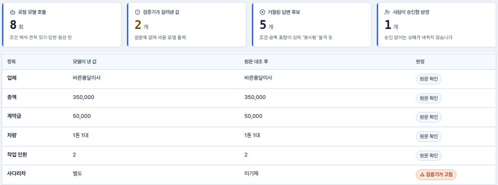
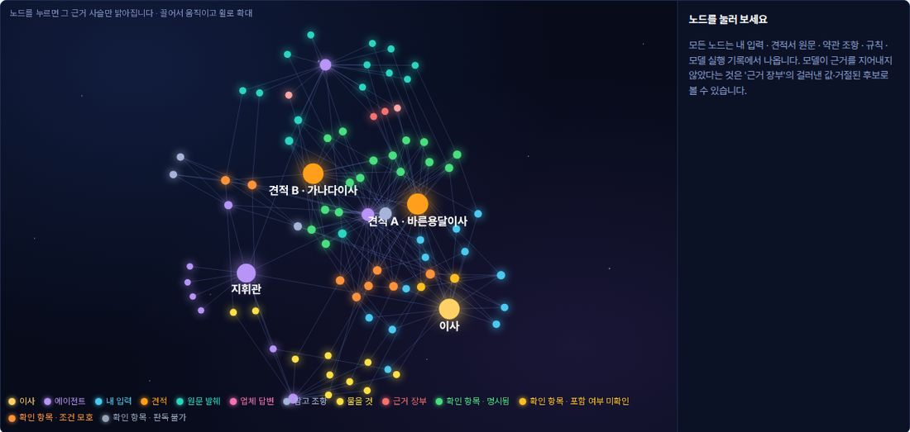

| 첨부 1 | 2026 AI Platform Build Challenge 기획서 | ||
| 팀명 | 구성원 성명 | ||
| 항목 | 제안 내용 | 상태 |
|---|---|---|
| 문제·사용자 | 소규모 이사를 준비하는 청년이 자신의 짐·작업조건과 견적의 포함 범위를 확인하기 어렵다. | 공공 피해 자료에 근거 |
| 해결 | 조건 정리 → 업체 찾기 → 견적 대조 → 업체별 문의 → 답변 점검 → 계약 전 점검 | 핵심 흐름 구현 계약서 AI 읽기 계획 |
| AI 역할 | 10개 작업 역할(에이전트) 중 LLM 3 · 규칙 7. LLM은 조건·견적·답변을 읽어 초안만 만들고, 판정·숫자는 규칙 검증기와 사람 승인이 정한다. | 구현됨 |
| 차별성 | 이미 받은 한국어 견적 원문 ↔ 내 조건 대조 → 확인 질문 → 답변 검증 → 원문 근거 추적 + 로컬 실행 | 구현됨 우위는 검증할 가설 |
| 구현 수준 | 실제 모델이 도는 웹 프로토타입. 견적 1건 평균 3.3~3.8초. 처음 보는 홀드아웃 평가셋에서 견적 오반영 7→4건(0은 아님), 자동 시험 71개 통과(2026-10-24, 로컬 GPU 8GB). | 구현됨 |
| 가치·수익 | 확인 없이 송금하는 선택을 줄인다. 소비자는 무료, 지자체·청년지원기관·대학이 이용권·운영 기능에 비용을 낸다. | 검증할 가설 |
| 1 문제 정의 | 2 해결 방식 | 3 AI 활용 | 4 차별성 | 5 구현 계획 |
|---|---|---|---|---|
| 2 · 3쪽 피해 근거, 사용자 여정 | 4쪽 사용 흐름, 실제 화면 | 5 · 6쪽 작업 역할, 검증·실측 | 7쪽 작업 방식 비교, 유사 서비스 | 8 · 9 · 10쪽 구현·일정·수익·기술 |
현재: 로컬 PC 설치형 프로토타입(개발 PC RTX 2080 SUPER 8GB, Ollama, 브라우저로 접속). 견적·답변 원문은 같은 PC 안 모델로만 처리하고 외부 AI API로 보내지 않는다.
초기 운영안(검증할 안): 기관 설치형 — 청년센터·대학 등 기관 서버에 모델을 두고 이용자는 브라우저로 접속한다. 원문은 기관 서버 밖으로 나가지 않는다.
일반 노트북·모바일 단독 실행 성능은 미측정(unknown)이다.
소비자원은 비대면 소규모 이사 계약에서 짐의 양이나 건물 구조를 이유로 추가비용을 요구하는 문제를 설명하고, 방문 견적·허가·보험 확인·계약사항 상세 기재를 권고한다 [1][5]. 신청 241건 중 20~30대가 65.1%(157건)다 [1].
| 시점 | 사용자가 확인하기 어려운 것 | 필요한 도움 |
|---|---|---|
| 견적을 받을 때 | 내 짐과 계단·주차·분해설치 조건이 반영됐는가 | 조건과 견적의 항목별 대조 |
| 계약금을 보내기 전 | “기본 포함”, “현장 협의”가 어디까지를 뜻하는가 | 업체에 보낼 구체적인 확인 질문 |
| 이삿날 | 사전에 무엇을 설명하고 어떤 답을 받았는가 | 견적 원문과 답변을 연결한 확인 기록 |
관악구에서 자취방을 옮기는 대학생. 이사 경험이 적고 아직 업체를 정하지 않았다. 아래는 사용 흐름을 설명하기 위한 가상 예시이며 실제 인터뷰가 아니다.
필요한 것은 문구를 요약해 주는 답만이 아니다. 계단 운반과 침대 작업이 포함됐는지, 별도 비용이 생기는 조건이 무엇인지 확인할 수 있어야 한다.
| 업체의 답 | 서비스의 처리 |
|---|---|
| “당일 보고 결정합니다” | 조건 모호 미확인 유지. 포함·해결로 바꾸지 않음 |
| 작업·비용 조건을 구체적으로 답함 | 해당 항목과 연결해 사용자가 원문을 보고 승인 |
| 단계 | 사용자가 하는 일 | 서비스가 돕는 일 | 남는 기록 |
|---|---|---|---|
| ① 조건 정리 | 한 문장으로 집·층·엘리베이터·짐을 적고 확인한다 | 읽은 조건을 칩으로 보여 주고 모르는 값은 ‘모름’으로 둔다 | 확인한 내 조건 |
| ② 견적 받기 | 견적 받을 업체를 고르고 받은 견적을 붙여 넣는다 | 허가 업체 후보 목록(순위 없음), 견적 요청 문장 | 견적 원문 |
| ③ 문의·비교 | 미확인 항목을 업체에 묻고 답변을 붙여 넣는다 | 질문 문장, 답변의 근거 문장 제안, 같은 항목 비교 | 질문·답변·승인 기록 |
| ④ 송금 직전 | 남은 미확인 항목을 보고 계약 여부를 정한다 | 계약서 기재 항목·계약금 비율 점검 | 남은 미확인 목록 |


| 축 | 값 | 뜻 |
|---|---|---|
| 기재 상태 | 명시됨 | 포함 여부가 조건 없이 분명 |
| 포함 여부 미확인 | 견적 원문에 해당 내용이 없음 | |
| 조건 모호 | “협의”·“당일 보고”·“필요 시” 등 유보 표현 | |
| 판독 불가 | 글을 읽어도 항목으로 옮길 수 없음 | |
| 비용 처리 | 총액 포함·별도·미확인 | 금액이 적혀 있는지를 따로 표시 |
| 예 “사다리차 필요 시 별도 7만원” → 조건 모호 · 비용 처리 별도(7만원). 비용은 분명하지만 ‘필요 시’의 조건이 정해지지 않아 질문이 남는다. | ||
| 기능 | AI/규칙 | 입력 → 출력 | 오류 차단 장치 |
|---|---|---|---|
| F1 한 문장 조건 해석 | LLM | 사용자 한 줄 → 집 유형·층·엘리베이터·옮길 짐 | JSON 스키마 강제, 집 구절 규칙(출발/도착 분리, 빌트인 제외), 수량·부피 추정 금지 |
| F3 견적 읽기 | LLM | 붙여넣은 견적 원문(최대 3건) → 총액·계약금·차량·인원·포함 문구 | 원문 대조 검증기, 총액↔계약금 금액 귀속, ‘1인 가구’의 숫자를 인원으로 읽지 않음 |
| F4~6 대조·비교·문의 | 규칙 | 내 조건 + 검증된 견적 → 4상태 카드, 비교표, 질문 문장 | LLM 호출 0회, 유보 표현 차단, 순위 없는 고정 행 비교 |
| F7 답변 점검 | LLM 규칙 | 업체 답변 원문 + 미확인 카드 → 갱신 후보 제안 | 답변 원문과 일치하는 문장만 허용, 조건부 답변은 ‘명시됨’ 거절, 사용자 승인 후 반영 |
| F8 계약 점검 | 규칙 AI 계획 | 계약서 글 → 기재 항목·계약금 비율 | 총액·계약금이 원문에서 확인될 때만 비율 계산, 주민등록번호는 수집하지 않음 |


| 지표 (모델 단독 → 검증기 포함) | 튜닝셋 Sonnet 작성, 1차 실패를 고친 뒤 재측정 | 홀드아웃 Sol 작성, 코드 수정 없음 |
|---|---|---|
| 견적 읽기 | ||
| 오반영(확인이 필요한데 ‘명시됨’) | 5 → 0건 | 7 → 4건 |
| 질문 재현율 | 94 → 100% | 86 → 92% |
| 원문에 없는 값 채움 | 1 → 0건 | 4 → 0건 |
| 과잉 질문 | 8 → 11건 | 11 → 12건 |
| 값 누락 | 0 → 0건 | 1 → 9건 검증기가 맞는 값도 지워 ‘판독 불가’ 질문이 늘어남 |
| 답변 점검 | ||
| 오반영 후보 | 40 → 1건 | 11 → 4건 |
| 정답 명시 재현율 | 86 → 86% | 74 → 68% 코드가 정답 1건을 잃음 |
| 평균 소요(견적 · 답변) | 3.8초 · 4.1초 | 3.3초 · 3.0초 |
| 원문에 없는 ‘사다리차 별도’를 지어냄 | 사다리 언급이 없음을 확인해 ‘미기재’로 되돌리고 장부에 이유를 남김. |
| ‘지금 3층 엘베 없음’을 ‘모름’으로 읽음 | 같은 집 구절의 ‘엘베 없음’을 읽는 규칙으로 교정. |
| 조건 해석(모델 계산) | 1.7초 |
| 모델 교대 시 추가 / 첫 적재 | +5~7초 / 37~112초 |
| 자동 시험(정확도 지표 아님) | 71개 통과 |
| 사용자 과업 | 자료를 따로 확인하는 방식 | 이사 지킴이의 연결 방식 |
|---|---|---|
| 견적 읽기 | 문서마다 작업 범위와 표현을 직접 해석 | 항목별 표시와 해당 원문을 함께 확인 |
| 빈칸 확인 | 무엇을 질문할지 스스로 작성 | 미확인 항목에서 문의 문구로 연결 |
| 업체 비교 | 총액과 개별 대화를 번갈아 확인 | 공통 항목별 답변·미확인 상태를 나란히 확인 |
| 서비스 | 공개 자료가 설명하는 기능 | 이사 지킴이와의 관계 |
|---|---|---|
| 짐싸 [7] | 이용약관상 견적 전달·계약·결제 보관·후기·분쟁 조정을 지원하는 중개 플랫폼 | 견적·계약·분쟁 절차는 겹침. 받은 견적 원문 대조는 확인 못 함(unknown) |
| 미소 [8] | 방문 조사 1회로 4곳 이상 견적을 받고, 표준 견적·영상 증빙을 소개 | 견적 비교·증빙은 겹침. 방문 조사 기반이라는 점이 다름 |
| Yembo [9] | 이사업체용 AI 조사로 인벤토리·견적·클레임 기록을 연결하는 기업용 제품 | 업체 대상이라 사용자가 다름 |
| DetectHiddenFees [10] | 해외 소비자용 AI. 판매자 소개에 따르면 견적·계약서의 숨은 수수료를 분석하고 서명 전 질문을 만든다(이사 전용 아님) | 확인 질문 생성이 직접 겹침. 이사 조건 대조·답변 검증·한국어·로컬 실행은 확인 못 함 |
| Agoyu [11] | 짐 촬영 AI로 무게·부피를 추정해 면허 이사업체 견적을 받는 미국 앱. 예상 밖 수수료 감소를 표방 | 추가요금 문제는 같음. 확인한 공개 자료에서는 받은 외부 견적 검토 기능을 확인하지 못함(unknown) |
같은 합성·모의 사례에서 ① 일반 안내문 ② 일반 LLM(검증기 없음) ③ 이사 지킴이 세 방식을 비교한다.
| 지표 | 정의 | 판정 방향 |
|---|---|---|
| 질문 누락 | 확인이 필요한 항목 중 질문하지 않은 비율 | 낮을수록 좋음 |
| 잘못된 확정 | 근거 없이 포함·해결로 바뀐 항목 비율 | 낮을수록 좋음 |
| 불필요한 질문 | 이미 명시된 항목에 대한 질문 수 | 함께 보고(보수성의 대가) |
| 준비 시간 | 쓸 수 있는 문의 문구를 완성하는 시간 | 짧을수록 좋음 |
| 원문 추적 성공률 | 결과 카드에서 근거 원문을 정확히 찾은 비율 | 높을수록 좋음 |
| 기능 | 상태 | 근거·남은 일 |
|---|---|---|
| 한 문장 조건 해석 · 맞춤 홈 | 구현됨 | 조건 해석 모델 계산 1.7초. 정확도 정량 측정은 계획 |
| 견적 읽기 · 항목 대조 · 원문 추적 (최대 3건) | 구현됨 | 견적 평균 3.3~3.8초. 홀드아웃 오반영 7→4건(0 아님), 실측은 6쪽 |
| 견적 받을 업체 찾기 (관악구 허가 27곳) | 구현됨 | 이사 구분·영업중, 가나다순, 순위·추천·전화번호 없음. 다른 구 확장은 계획 |
| 업체별 문의 · 답변 점검 · 같은 항목 비교 · 계약서 규칙 점검 | 구현됨 | 답변 평균 4.1초. 사람 승인 후 반영. 계약서는 기재 항목·계약금 비율 규칙 점검 |
| 10개 작업 역할 작업 보고 · 개별 켜기/끄기 · 근거 장부 · 근거 그래프 | 구현됨 | 역할별 산출물·근거 보고, 걸러낸 값 장부, 4열 근거 사슬. 자동 시험 71개 통과(정확도 지표 아님) |
| 계약서 AI 읽기 · 견적↔계약 불일치 대조 | 계획 | 주민등록번호는 제외하고 특약·추가비용 조항을 추출 |
| 세 번째 새 평가셋 · 사람 검수 라벨 · 조건 표현 규칙 | 계획 | 지시어·‘예정/변경’ 규칙 보강 후 측정. 튜닝셋·홀드아웃 20+20건은 6쪽. 실존 업체·개인정보 없이 설계 |
| 후속: 표준약관 원본 대조 · 타 자치구 허가 목록 · 이미지 견적서 OCR | 계획·후보 | 출처·이용 조건을 확인한 목록만 추가. OCR은 서버 전송 없이 브라우저에서 시험 |
| 성명 | 담당 | 본선까지 맡는 일 |
|---|---|---|
| AI 하네스 · 검증기 | 로컬 모델 연동, 계약서 AI 읽기, 평가셋 자동 측정 | |
| 화면 · 시각화 | 화면·근거 그래프 다듬기, 시연 동선 점검 | |
| 도메인 규칙 · 데이터 · 평가 | 약관·소비자원 대조, 평가셋 라벨링, 발표 |
| 구분 | 사전 구현 허용 시 | 제한 시 (최소 시연 고정) |
|---|---|---|
| 당일 범위 | 사전 구현본으로 시작해 평가셋 재측정·계약서 AI 읽기 통합. OCR·다른 지역 확장은 후속 | 견적 1건 입력 → 미확인 표시 → 질문 → 모호한 답변 거절·명확한 답변 승인 → 원문 추적. OCR·다른 지역 확장·계약서 AI 읽기는 후속 |
| 라이브/재생 | 모델 교대가 없는 구간은 라이브, 교대가 필요한 구간은 화면에 ‘사전 실행 재생’ 배지로 구분한다. | |
| 검증할 가설 | 측정 지표 | 검증 방법 | 상태 |
|---|---|---|---|
| 물어볼 항목을 더 잘 찾는다 | 질문 발견률: 확인이 필요한 항목 중 사용자가 질문한 비율(불필요한 질문도 함께) | 미리 정한 기준 사례에서 일반 안내문과 비교 | 미측정 |
| 모호한 답을 해결로 오인하지 않는다 | 근거 없는 확정 비율: 충분한 근거 없이 포함·해결로 바뀐 항목 비율 | 새 평가셋에서 명확·모호·누락 답변을 구분해 평가 | 미측정 |
| 문의 준비 부담이 줄어든다 | 쓸 수 있는 문의 문구를 완성하는 시간과 누락 항목 | 같은 난이도 과업에서 시간·품질 비교 | 미측정 |
| 확인 전 송금 선택이 줄어든다 | 미확인 항목이 남은 채 송금을 택한 비율 | 모의 계약 과업으로 먼저 검증. 실제 행동은 동의 기반 후속 조사 | 미측정 |
| 근거를 다시 찾을 수 있다 | 결과 카드에서 관련 원문을 정확히 찾은 비율 | 표시 이유를 설명하고 원문을 찾는 과업 | 미측정 |
서울시는 청년에게 민간 AI 전세사기 위험분석 보고서를 무료 쿠폰으로 지원한 사례가 있다 [4]. 공공기관을 통한 이용 지원의 참고 사례일 뿐 이사 지킴이의 수주나 수익성을 입증하지 않는다.
기관형 매출 = 계약기관 수 × 기관당 계약금액. 연동형 매출 = 기본료 + 유료 처리 건수 × 건당 요금. 여기서 추론·운영·고객지원 비용을 차감해 판단한다. 추정: 원가는 기관 서버(GPU) 구축·운영비가 중심이다. 가격·처리 원가·도입률·갱신률은 모두 unknown.
확장 순서 관악구 청년 사용 검증 → 기관 도입 의사·비용 검증 → 출처·이용 조건을 확인한 다른 지역 목록 → 주거 플랫폼 연동. 남은 핵심 과제는 한국어 견적·답변 점검 정확도, 기관 구매 의사, 운영 원가, 지역별 데이터 최신성이다.
| 순서 | 내용 | 확인할 것 |
|---|---|---|
| 1 | 관악구 청년 지원 기관 담당자 인터뷰(본선 전) | 이사·계약 상담 빈도, 구매 주체·절차, 서버 설치 가능 여부 |
| 2 | 기관 설치형 시범 사용(상담 창구) | 6쪽 지표와 사용자 과업 비교로 효과 측정 |
| 3 | 가격·원가 검증 | 서버 구축·운영비, 도입·갱신 의사(모두 unknown) |
| 데이터 | 쓰임 | 출처·이용 조건·개인정보 |
|---|---|---|
| 사용자 입력(조건·견적·답변) | LLM 읽기와 대조의 입력 | 처리 방식은 아래 표 |
| 이사화물 표준약관 | 기재 항목, 계약금 비율, 참고 조항 연결 | 생활법령정보 확인 판본 [6]. 공정위 최신 원본 대조 전, 법률 자문 아님. LLM은 조항을 생성하지 않음 |
| 관악구 허가업체 현황 | 견적 받을 업체 찾기(27곳), 상호 대조 | 공공데이터포털 [13], 기준일 2026-04-24, 무료·이용허락범위 제한 없음. 전화번호·좌표 제거 |
| 소비자원 주의보·카드뉴스 | 점검 항목의 근거, 권고 안내 | 한국소비자원 공개 자료 [1][5] |
| 항목 | 현재 구현 | 기관 운영안 계획 |
|---|---|---|
| 원문·결과 저장 | 이용자 브라우저 세션에만 저장. 웹 서버는 원문을 DB에 저장하지 않음 | 원문 미보관 |
| 모델 호출 | 로컬 모델 호출만(외부 AI API 호출 없음) | 기관 서버의 로컬 모델. 서버 로그는 호출 수·시간만 |
| 기관 집계 | 미구현 | 개인 식별 없는 건수만 제공 |
| 구성요소 | 제공처·위치 | 라이선스 | 쓰임·비고 |
|---|---|---|---|
| A.X 4.0 Light | SK텔레콤(SKT AI Model Lab) · Hugging Face skt/A.X-4.0-Light | Apache-2.0 | 조건 해석관·문서 읽기관. 로컬 태그 ax4-light:q4_K_M(양자화 파일의 변환·배포 경로는 unknown) |
| Qwen3-4B-Instruct-2507 | Qwen · Hugging Face Qwen/Qwen3-4B-Instruct-2507 | Apache-2.0 | 답변 점검관(도구 호출). 로컬 태그 qwen3:4b-instruct-2507-q4_K_M |
| Ollama · Next.js 16 · React 19 · zod 4 · force-graph | github.com/ollama/ollama, vercel/next.js, facebook/react, colinhacks/zod, vasturiano/force-graph | MIT | 로컬 모델 실행 · 웹 화면·서버 · 화면 구성 · 출력 스키마 검증 · 근거 그래프 |
| lucide · Pretendard | github.com/lucide-icons/lucide, orioncactus/pretendard | ISC · SIL OFL 1.1 | 아이콘 · 글꼴(화면·이 문서) |
[1] 한국소비자원, 소규모 이사 피해예방주의보(2026-04-21)
https://www.kca.go.kr/home/sub.do?menukey=4005&mode=view&no=1004458186&page=1
[2] 국무조정실, 청년친화도시 보도자료
https://www.opm.go.kr/opm/news/press1.do?articleNo=158513&attachNo=146406&mode=download
[3] 서울시, 2026년 청년 중개보수·이사비 지원
https://www.seoul.go.kr/news/news_report.do?nttNo=464088&srchCtgry=465
[4] 서울시, AI 전세사기 위험분석 서비스 지원
https://www.seoul.go.kr/news/news_report.do?nttNo=454825
[5] 한국소비자원, 이사 계약 주의사항 카드뉴스
https://www.kca.go.kr/smartconsumer/sub.do?cate=00000051&menukey=7714&mode=view&no=1004455170
[6] 찾기쉬운 생활법령정보, 이사업체 정하기(표준약관)
https://m.easylaw.go.kr/MOB/CsmInfoRetrieve.laf?ccfNo=3&cciNo=2&cnpClsNo=1&csmSeq=666
[7] 짐싸 이용약관 https://www.zimssa.com/policy/terms
[8] 한경 JOB&JOY, 미소 이사 서비스 소개
https://magazine.hankyung.com/job-joy/article/202511132159d
[9] Yembo Moving https://yembo.ai/moving
[10] DetectHiddenFees(SaaSHub 등록 소개, 판매자 설명)
https://www.saashub.com/detecthiddenfees
[11] Agoyu(HousingWire 보도 등)
https://www.housingwire.com/articles/realtorcom-agoyu-moving-quotes/
https://www.globenewswire.com/news-release/2025/08/26/3139298/0/en/New-Agoyu-App-Modernizes-the-Moving-Experience-with-Instant-AI-Powered-Quotes.html
[12] 데이콘 DAKER, 2026 AI Platform Build Challenge 예선 안내
https://daker.ai/public/hackathons/ai-platform-build-challenge-prelims?postId=5d568379-2efc-4f2a-b3ba-b553684c7766§ion=board
[13] 공공데이터포털, 서울특별시 관악구_화물자동차운송주선사업허가업체현황(기준일 2026-04-24)
https://www.data.go.kr/data/15080952/fileData.do
[14] 정책브리핑, 국가데이터처 인구이동 발표(2026-01-29)
https://www.korea.kr/briefing/policyBriefingView.do?newsId=156741997
[15] 정책브리핑, 1인 가구 통계 보도
https://www.korea.kr/news/policyNewsView.do?newsId=156772432